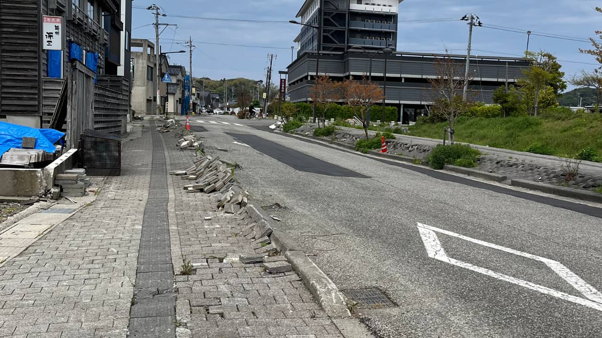
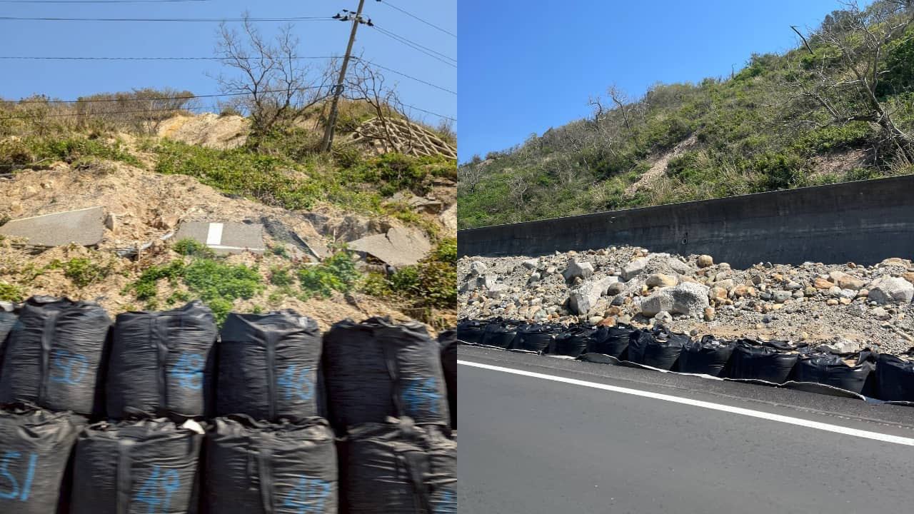

石川県輪島市にてメンバーが一般家屋の泥のかき出し作業と現地調査を行いました。
2025年5月1日〜4日にこもれびメンバー4名が石川県輪島市を訪問しました。
市内では現在も被災建物の取り壊しが進められており、復旧作業が続いていました。海岸付近では地震による隆起の痕跡がはっきりと残っており、地形の大きな変化を実感しました。
土砂によって通行できなくなった道路の代わりに、隆起した海岸の上に仮設の道路が作られています。これにより、普段は見ることのない「海側から見た堤防」を目にすることができました。
2日目には輪島市災害たすけあいセンターの活動に参加し、家屋の床下に堆積した土砂のかき出し作業を行いました。土砂をスコップで掬いあげ、土嚢袋に入れ、口を結んでトラックに乗せて運ぶ、という一連の流れを作業ごとに分担して行いました。同じグループの方が手際よく作業を進めていたので、それに負けじと私たちも全力で活動に取り組みました。
3日目には重蔵神社での支援物資配布に参加し、地域住民の方に野菜や飲料水、パックご飯などをお渡ししました。配布の合間には、スタッフと住民の方々との間にあたたかなやり取りが交わされていました。
今回の活動を通じて、輪島市の現状を深く知ることができました。また、多くの方々に親切にしていただき、心から感謝しています。この気持ちを忘れず、こもれびとして新たなプロジェクトに取り組みます。